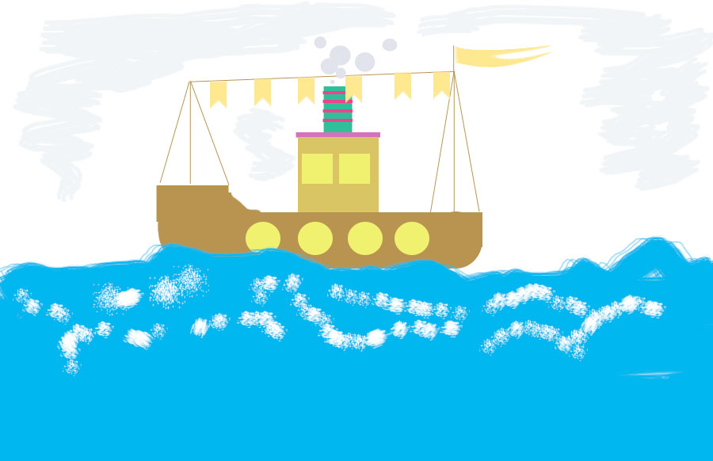

Шифры |
|
| Меню |
Шифр может представлять собой совокупность условных знаков (условная азбука из цифр, букв или определённых знаков) либо алгоритм преобразования обычных цифр и букв. Процесс засекречивания сообщения с помощью шифра называется шифрованием.  |
| feater | |